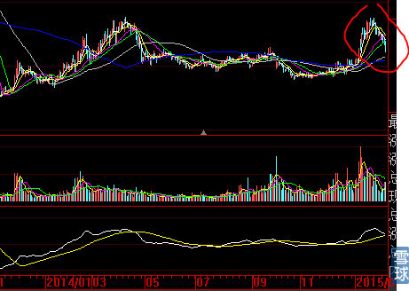
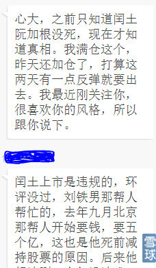
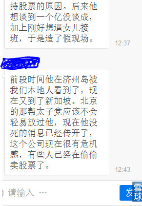
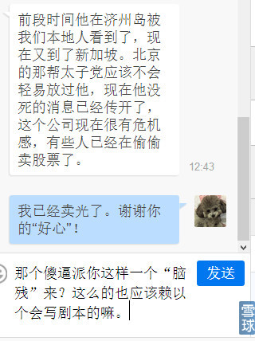
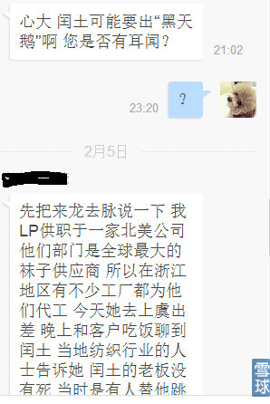
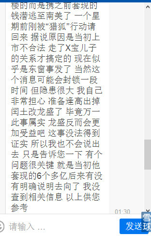
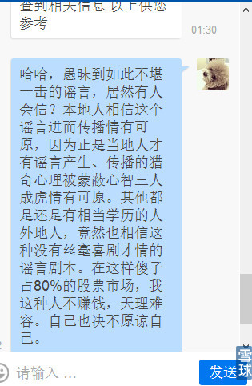
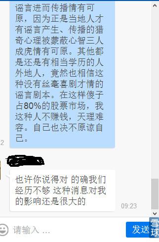

直到30岁的时候才猛然醒悟，其实人都不是非好即坏非黑即白。等我知道起码的人情世故后才会不用人教也知道：即使被描绘成十恶不赦的“慈禧”也会希望被统治的百姓过上丰衣足食的生活，封建皇帝与今天全世界所有民主国家总统、总理一样呕心沥血整治吏治发展经济。否则，在即使今天的中国这种如此严格管理意识形态的国家，类似《康熙大帝》、《汉武大帝》等等历史影视剧就不会被“严格审查通过”公映的（当然与历史的真实是不完全相符的）。
后来，直到四十不惑后才明白，我上学读书时代，那种非黑既白这种判断的标准和僵化思维模式的教育，有那个时代的必要性（至今学校还是这样的教育方法），并非一无是处，最大的好处是：在社会政权大动荡时代，斗争的一方可以最高效率的教育文化层次、修养层次、见识层次、阶级层次的亿万受众，在最短的时间简单高效的统一思想，继而形成强大的战斗力，摧枯拉朽战无不胜。至于其中的不可避免的不公正、不理性、不道德因素和个体的冤屈与目标相比，微不足道。毕竟，出发的时候就是为了那个目的。
今天一天，忙于公司的资金安排等职责工作（年关在即可想而知有多忙）、4S店修车保养等等（我向来都是有备无患，毕竟春节放假在既），晚上回家上网就看到最少有1000多个留言。呵呵，也不可能一一回复了。还是那句话，看得懂的就懂，看不懂的终归不懂，一切都是命。既然是命，还是各安天命好自为之吧。
一、进赌场的人，无非就是两种状态：货币、筹码。赢了筹码变多、输了筹码变少。至于手中是这个筹码是鸡蛋还是那个筹码是石头，你拿的是一幅好牌还是一幅死牌，就是各自命运结局不同的“命根”。
一、同样一个女人，在有的人眼里如花似玉，有的人眼里简直就是夺命勾魂的妖魔。同样一幅图形，在有的人眼里就是黄金矿藏，在穷人脚下即使埋藏800年，直到他搬出屋仅仅一天被人挖走，也与他800年的日夜相守无缘。下面这样的图形，一年里，就算我这样的老手，能有几次正好资金处于“货币”状态或者正好处于手持它的筹码状态？身在福中不知福，你说人得有多贱？下图是什么状态？睁开你的狗眼去翻看历史上所有的大牛股启动前的最后底部形态，有几只不是这样的？
至于将来怎么走，我凭什么要告诉你？我有什么义务告诉你？你说是吧！呵呵。

二、今天我的同事小朋友问我：我们的股票跌成那样，你怎么不做一次小波段呢？这不符合你一贯的手法啊，记得你天天教导我们，5日均线不能弯头，一旦弯头先退出再说，“那可是5日均线啊”！我的回答是：这次不同，以前最多只有2000粉丝，我用方法测试过，大约有12%的真实受众回复率。现在有2万粉丝，12%就超过了之前粉丝的总数。每一个人的技术基础、心理底线完全不同。思考问题，要用“木桶短板原理”做终极最差基础的那个人的角度为思考的开端前提。这些新粉丝基本都是新韭菜，我的持股方法如果与他们不一致，必然心态和口气就会冷嘲热讽。我们这次目标远大，就算我是坏人，也总有一生中难得的一次阴暗人性被太阳光辉照耀的时刻。这次就带新“韭菜”们走过一次完整的买、守、卖的经历，中国股市未来至少会有1000个有完整心路历程的合格投资者。即使我的账户会随之起伏，那又怎么样呢？不就是几天的机会时间放弃而已嘛。
不过话说回来，就算拿我只是其中的一个中等账户，“饭蚊子（苍蝇）陪夜蚊子熬夜”跟“韭菜”账户一起起伏，我银子的“盈亏”的“起伏数额部分”，也要大过小“韭菜”们全部本金还要拐出几个湾。所以，那些不停的叫叫叫的新韭菜可以“安心绕道”不要再来了。
三、本来还想说说它未来的走势与大盘的关系，以及它与前几个月的大牛股本次下跌回调有哪些本质上的不同，想想算了。我早就说过了：人是教不会的！至于什么是大牛股的“鸡蛋”基础图形，什么是“石头”基础图形。你去打开任何一只大牛股的图形，傻子也明白了呀！没有文化不要紧，手指头不够用就把脚趾头也加上，去把所有历史大牛股的K线根数和涨涨跌跌的起伏次数看看不就全部真相大白了？再说了，新韭菜有几个不是“大学生”出生？这还要人去教？还是不明白的话，你就老老实实当“韭菜”好了。“生来就是舅子命，想当姐夫万不能”，还是洗洗睡了比较安生。
四、下面的几个截图，本来是想等将来我做这次操作回顾技术贴的时候再透露，今天还是先悲天悯人一把。你们自己去看，自己去判断决定。
第一个对话截图是很早以前的，我理都难得理。天啦。智商太低的人你咋与他对话呢？



我最后对他的回复应该是“那个傻逼派你这样一个“脑残”来？怎么的也应该来一个会写剧本的嘛”。其中有错别字，特此更正。
下面的对话是最近两天的：抄录如下：
XXXXX：心大 闰土可能要出“黑天鹅”啊，您是否有耳闻？21:02
炒的是心：？23:20
XXXXX：心大，我先把来龙去脉说一下，我LP供职于一家北美公司，他们部门是全球最大的袜子供应商，所以在浙江地区有不少工厂都为他们代工。今天她去上虞出差，晚上和客户吃饭聊到闰土。当地纺织行业的人士告诉她，闰土的老板没有死，当时是有人替他跳楼的，而且是携之前套现的钱潜逃至南美了，一个星期前刚被“猎狐”行动请回来，据说原因是当初上市不合法，走了X宝儿子的关系才搞定的，现在似乎是东窗事发了。当然这个消息可能会封锁一段时间，但隐患很大，我自己非常担心。准备逢高出掉闰土改龙盛了，毕竟万一此事属实，龙盛反而会更加受益吧！这事没法得到证实，所以我也不会说出去，只是告诉您一下。有个问题很关键，就是当初他套现的6个多亿后来有没有明确说明去向了，我没查到相关信息 以上供您参考。01:30
炒的是心：哈哈，愚昧到如此不堪一击的谣言，居然有人会信？本地人相信这个谣言进而传播情有可原，因为正是当地人才有谣言产生、传播的猎奇心理被蒙蔽心智，三人成虎情有可原。买股票的人，都还是有相当学历的人外地人，竟然也相信这种没有丝毫喜剧才情的谣言剧本。在这样傻子占80%的股票市场，我这种人不赚钱，天理难容！不坚决的挣这些人的人也决不原谅自己。
XXXXX：也许你说得对，的确我们经历不够。这种消息对我的影响还是很大的。09:23
炒的是心：呵呵，既然你已经愚昧至此，可以去死了。




所以，我前几天还在一个帖子里写到：在你们将来的持股时间里，会听到各种匪夷所思的传言和谣言，你们不要相信它就好了。你想啊：1、跳楼后是公安局做的结论，如果有假，你也太不把警察当干粮了吧？绑缚刑场还有验明正身一说，更别说“阮家根”是当地极具影响力的大企业家+那种惨烈的死法，还不被“反复验明正身”？2、就是这样没有任何技术含量的只有脑残到多么牛逼的SB才会相信的谣言，居然还TM真有人信，还舔着脸在我的信箱留言。
去死吧！
每天进步一点点98@炒的是心:好想老师呀！老师出来骂我们几句吧！
炒的是心@每天进步一点点98: 好啊！那就骂两句。
1、你们其中的一些人必将是2015最财运亨通的一群人，广开财富之门的全部“前滚翻”动作有三个：买入、持有、卖出；
2、前提是：好好上班、努力工作，目前买入这个环节已经完成，用时5秒。剩下持有环节是用N个月来计算的，将来卖出动作与买入耗时相同：5秒以内。如果中间这么简单的动作环节都做不到，你就是头猪。哦，还不能这么侮辱猪，据科学考证，猪的智商在动物界还是很高级的。
3、一个小故事：1921年美国一家汽车大公司自动生产线故障停车，全部拆卸检修需耗时半月+全部重装费用不少于15万美金，那个时候不是美元是“美金”哦。资本家找来一位久负盛名的著名电器工程师，谈好3天内修好，报酬2万美元。这个电器工程师在庞大的车间日夜检查诊断，很快计算用的草纸堆砌有1尺高。三天后他在一个大型部件外壳上用粉笔画了一个大圆圈，中间再画一个X，然后对工厂工程师说：打开它，把里面的电机和部件换掉。果然一切重归于好。这时候工厂主有些反悔，对电器工程师说：你看，画这个圈最多耗时5秒，我给你2美元，折合成8小时日薪是57600美元，另外再奖励你1998元，共计2000美元，这样已经很公平。电器工程师稍作沉默回答道：是的，我画那个圈最多只值2美元，但是，我知道在什么地方画圈要值19998元，请付给我应得的2万美元薪酬吧！
4、买入与卖出合计只需要耗时10秒，这两个动作的确不值多少钱。值钱的地方就是知道什么时间和地点买入、什么时间和地点卖出以及中间的持股时间如何做到岿然不动。就如同我的DMA参数，设置它只需要5秒，但是，知道怎么正确使用它的诀窍，却可能需要耗去你1年的时间参悟，我如果愿意稍加点拨，就有可能改变你一生的命运。谁知道呢！
5、刚才看到一个人的发言，我差点都笑喷了，他的话你们可以去找找看，大意是：“去年11月，猪都能飞上天的日子里，你写那么多的帖子算什么本事？我的问题你不回复，还在这里说三道四，难道你就是为了刷你的存在感”？
OK，过去的咱们就不说了，按照他的逻辑，再过几个月，他又会说：闰土股份+浙江龙盛这样打明牌的股票，是个猪也能计算后知道，这又能说明你有什么本事呢？你写出来难道就是为了证明你的存在？
坐看股起888@炒的是心:心大，前二十多年的股票历史，有一个有趣的问题，市场从来都和经济面无大关系。倒是和政治面关系极大，上轮牛市起于江胡交接的顺利完成，至十七大前后走完(利好出尽)，本轮牛市从习大大肃清周薄案的影响开始，会否于十九大前后(2017年四季度)结束，拭目以待。有着五千年文明史的中国，对政治稳固的希冀从来都是第一位的，只要政治稳固，人民能创造出无穷的财富，也就能给股市无尽的想象。
炒的是心@坐看股起888: 股市的本质，就是玩筹码，除此之外没有任何其他解释。可惜，市场中只有文化少、长年搏杀生存下来、并获得巨大成果的很少一点成功人士才能理解（例如徐翔、林园以及大散牛人）。做实业的都知道，靠企业能力、本事赚钱太难，就算有聊聊无几的有几个企业获利能力强，连年盈利增长30%—50%（是真的利润基数巨大的增长），也难以满足操作它股票的各路人群期望它的股价每年至少翻一番的要求。虚拟市场是个不劳而获的游戏，参与者一天都不能等的欲望难填是股价总是处于不被“合理”估值状态。场外一切的经济解读、经营情况分析、专业人员对个股的微观分析报告，都是为股价寻找下跌、上涨的噱头与借口，换取股价阶段性巨幅上涨、下跌过程，才能年复一年的获取差价波动这个最终的目的。也才有所谓的“垃圾股”被爆炒、丑小鸭变凤凰的财富效应，正是这些财富效应，吸引一代一代的新韭菜进场。就像打仗会死人一样，但是再惨烈的被战场毁灭历史教训，也不可能阻止人类不去以命相博。
所有的基本面分析、基础分析，如果不建立在这样的理论基础上去研习，全部都是无源之水无本之木。
我的这个回复，价值连城。无论对新手，还是已经手握100亿富甲四方的市场老手都一样。区别是：前者什么都不知道，后者是“知其然不知其所以然”。
晨风0o@炒的是心:心大讲讲复盘的方法呗。
炒的是心@晨风0o: 这还不简单要人教？你找女朋友第一想法是啥？一定是漂亮啊！你去专找历史上涨得最好的大牛股去复盘那段时间前后的过程不是一个道理吗。专找涨的特别好的股票，分成短期爆庄股、长期大牛股，然后，分析它的盘子大小，基本面如何（无所谓基本面好坏，关键是基本面对应的股价）、涨前有哪些共同的特征（只要有大资金做它，过程基本都大同小异，这是交易规则决定的，我有帖子讲过这个道理，《前辈的爱》你去看），主涨时间多少天、中间流畅程度与高度的关系。等等。总之一句话，别人家的媳妇吸引你，一定是她有长处：要不就是漂亮（业绩好）、要么就是身材好（盘子小股价低）、要么就是风骚（资产重组）
叶子红了@炒的是心:心大的宝贝“闰土股份”和“中国南车”从k线看有区别么？为什么南车就是山顶了，闰土反倒一定是大牛股？是不是屁股决定脑壳了？
炒的是心@叶子红了: 算我屁股决定脑袋好了！呵呵。送你一句话：一旦做出判断，势必会影响自己的操作执行，执行的结果是福是祸，后果都是自己承担而别人无法替代。最终市场会用真金白银奖励判断正确方、惩罚判断错误方。不是仅仅打打嘴仗那么轻松愉快一笑而过。这和在战场上用生命去博弈有啥的区别？
鑫鱼天空@炒的是心:看着安诺其的走势和公司互动的内容，感觉基本面正如之前分析的那样，没有发生很大变化，那么为什么 ls和 rt先于大盘调整并不回头的破指标的恶劣下跌？要么是他疯了，要么所谋者大！
炒的是心@鑫鱼天空: 因为进驻“安诺其”的大资金太聪明，也太牛逼。我是把它们这三只股票放在一起看盘的。今天晚上观察后还在感叹不已：这个世界上牛人真是太多，哪有笨韭菜活命的机会呢？我来给你揭穿敢于逆势做“安诺其”大资金牛人的内心活动与操盘计划吧。
1、安诺其前天还在13.5元以下，它的大资金也在看浙江龙盛+闰土股份的走势，因为他们明白前两个大哥的底线，更知道两个大哥未来的市场绝对价格，所以，即使安诺其在今天价格翻倍之后，届时仍然只有两位大哥股价的1/3。所有，敢做“安诺其”的主力在未来退出弃庄的时候，走的会更加潇洒从容，因为一切的买是为了最终的卖。安诺其的大资金们是用“动态的眼光”观察事物，而非“小散”直盯着每天的K线是阴阳用“静态的眼光”观察问题。
2、浙江龙盛股价一直以来就比闰土股份低，主要是2013年之前闰土股份每股收益比浙江龙盛高，盘子比龙盛小50%。由于“阮家根”事件的影响，加上股价更加“低廉”，所以浙江龙盛先走出来。待龙盛的股价从15元开始起步到达21.68元涨幅达到44.45%的时候，闰土的股价反而落后到18.6元，之间的差异是3.08元，当龙盛创出27.15元的历史新高的时候，闰土的最高股价是24.61元，差价是2.54元，这个绝对价格差异，在下跌的过程中保持的将近9天，直到今天的2015年2月6日被缩小到1.88元，这还是闰土今天收盘跌幅-5.98%龙盛跌幅-2.72%造成的，假设今天两只股票跌幅一致，差异会更加缩小。这也是闰土今天盘中跌幅加大的主要原因，你们有谁观察过？注意过？如果早一点注意到，你们就会发现：第一、龙盛即使在今天大盘跌幅82个点的情况下，也不可能被跌停吧？既然这样，闰土在已经下跌-4%的情况下，又能跌到哪里去呢？即使盘中跌掉-7%，除了笨蛋本来就应该死的人，谁还会担心、害怕而不加仓呢？这个从它们第一天下跌我就时刻关注的细节，也是我在龙盛22元时换入18.7元闰土的主要内心计算活动。
3、索性把秘密都告诉你们吧。我为什么对浙江龙盛所谓的已经涨幅一倍的高位回调在技术上视而不见、毫不畏惧？就是因为我是天生富贵的命。在我单独做浙江龙盛迷茫的时候，上天给了我一个图形的参照物：闰土股份。看看闰土股份，我就知道浙江龙盛价格调整位的极限所在以及未来的真正主升浪走势是以哪种方式展开。
所以我说：技术越好死的越快。太多的核心技术是在功夫之外。
贱买贵卖:@炒的是心:我坚定持有rt，今天低位還加倉。回想自己炒股的經歷加上對心大之前文章的理解，談幾點感悟:
一、主力要的效果就是:1、下跌的時候讓你感到無限的恐懼，摧垮信心；2、上漲的時候讓你變得無盡的貪婪，得意忘形。
二、莊家遠比我們想象的要狡猾的多，他們會利用大盤以及各種環境改變短期的玩法，而不是按我們任何一個人臆想的圖形去走。
三、圖形越大，空間越大。暴跌暴跌再暴跌就是利好。沒有無緣無故的漲，也沒有無緣無故的跌。底部區域跌是好事，堅實的底部都是真金白銀砸出來的，所謂不破不立。跌的多反彈時動力才足。
四、我特別相信:假如不是下跌中持有，真正大漲來臨的時候，我們未必有勇氣或者有機會上車。
五、羅馬不是一天建成的，每一個牛股爆發之前，持有者都經曆過相當痛苦的折磨。因為，炒的是心。
六、只要我堅定看好它，相信它會到目標價區域，那就持股不動，怎麼跌還是那麼多股數不變，而且還省了交易佣金，正是所謂的籌碼。
炒的是心@贱买贵卖: